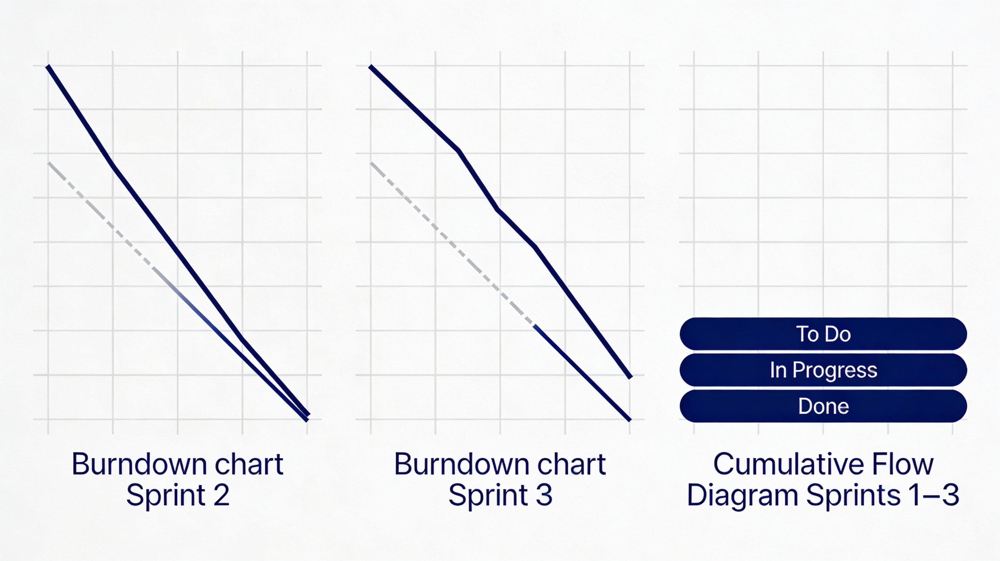

Everything in one place to feel seen, supported, and organized
Learn the basics
Short explainers and visuals introduce stress, anxiety, low mood, and burnout, with links to reputable organizations and emergency support if things feel unsafe.
Connect with peers
Topic‑based support groups let users talk with others facing similar challenges, share coping strategies, and feel less alone between appointments.
Plan gentle self‑care
A weekly view helps schedule therapy, movement, rest, and social time, turning abstract “self‑care” into small, realistic actions.
Group Sharing: safe peer‑support rooms
Groups are organized by theme (for example Anxiety, Depression, Student Stress) and run with clear guidelines around respect, confidentiality, and listening. Members can read what a group is about, join with one click, and see upcoming meetups or prompts for discussion.
24 members · weekly check‑ins
18 members · study‑life balance
16 members · mood tracking & support
Student Burnout Reset
A gentle space to talk about exhaustion, perfectionism, and motivation with others who get it.
Next meetup: Wednesday · 7:00 p.m. online
Weekly Planner: tiny steps that add up
The planner turns self‑care into a week‑at‑a‑glance view. Activities are grouped into categories like therapy, movement, rest, and connection so users can see whether their week is balanced and where they might need a small adjustment.
| Sun | Mon | Tue | Wed | Thu | Fri | Sat |
|---|---|---|---|---|---|---|
| Walk 20 min | Therapy 4 pm |
Sprints 1–3 at a glance
Setting the foundation
Defined the project scope, objectives, stakeholders, and Agile roles. Built the first version of the Awareness and About sections and drafted an initial roadmap and backlog.
Designing key journeys
Refined the Group Sharing and Weekly Planner concepts, described how people move through each feature, and used Kanban boards plus a burndown chart to track progress.
Polishing the experience
Cleaned up the layouts, clarified the join‑group and plan‑your‑week flows, and prepared final visuals, metrics, and documentation for the course presentation.
Information radiators & agile tooling
Kanban boards
Charts & insights
In the assignment submission, screenshots of these boards and charts are included in the separate Agile report and user‑guide documents.